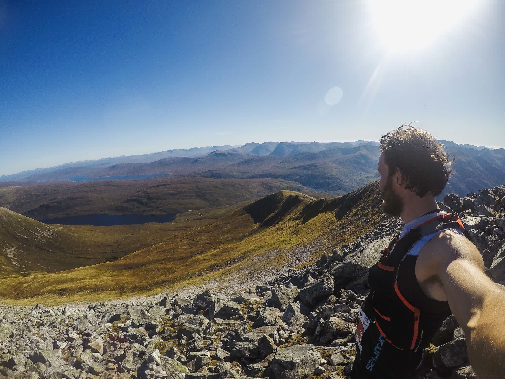

View from Na Gruagaichean, the finish line of Mamores VK.The final ridge of Mamores VK.Scottish sunset 1.Scottish sunset 2.Scottish sunset 3.The gear I used during Glen Coe Skyline (I brought only some of the food shown in the picture.Nervous atmosphere before the start of Glen Coe Skyline.I was running at the tail of the lead pack during the first kilometers of the race.This was the last picture I took during the race. At this point I understood that things were going much better than expected, and I needed to stop fumbling around with my GoPro camera.Finally done.Can't describe the feelings I had at this moment.A trophy and money. Best prize ever.Rather happy to be on that list of names.